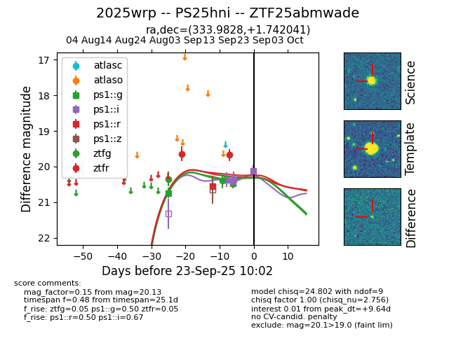
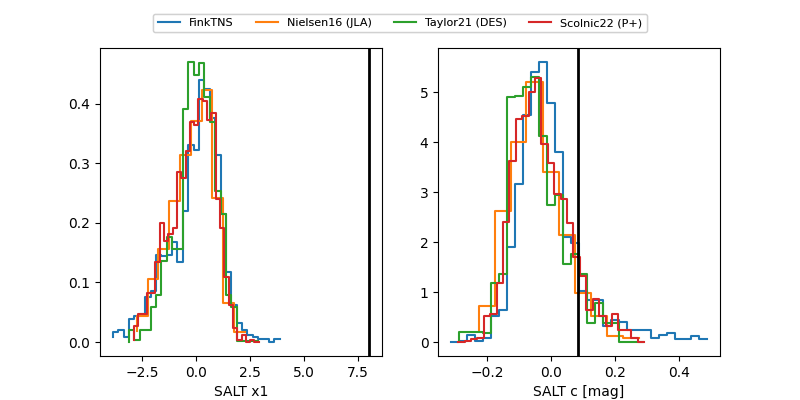

FINK: ZTF25abmwade
Lasair: ZTF25abmwade
ALeRCE: ZTF25abmwade
TNS: 2025wrp
YSE: 2025wrp
ZTF25abmwade (ztf,fink)
2025wrp (tns,yse)
PS25hni (panstarrs)
equatorial (ra, dec) = (333.9828,+1.74204)
galactic (l, b) = (64.2610,-42.74003)


last ps1::g=20.47, ps1::i=20.13, ps1::r=20.55, ztfg=20.40, ztfr=19.67
3 ps1::g, 4 ps1::i, 1 ps1::r, 2 ztfg, 2 ztfr detections